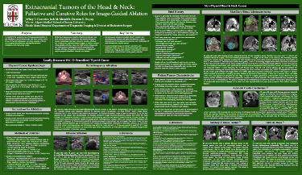

Jeffrey P. Guenette / Scientific & Educational Exhibits
Extracranial Tumors of the Head and Neck: Palliative and Curative Roles for Image-Guided Ablation
Guenette JP, Monchik JM, Dupuy DE
Radiological Society of North America 98th Scientific Assembly and National Meeting
November 25-30, 2012, Chicago, IL
 Abstract:
PURPOSE/AIM: To highlight the emerging role of image-guided ablation in the treatment of extracranial head and neck tumors, with a focus on thyroid metastases, including a review of tumor and imaging characteristics, appropriate ablation modalities, and interesting cases.
CONTENT ORGANIZATION: 1. Review of thyroid tumor epidemiology and relevant neck anatomy; 2. Indications for ablation of thyroid
tumor metastases; 3. Description of thyroid tumor ablation modalities, procedures, potential complications, and followup; 4. Single-center thyroid ablation experience to date; 5. Brief history of non-thyroid head and neck tumor ablation; 6. Specific tumor and patient characteristics important when considering head and neck ablation; 7. Pictorial review of interesting cases; 8. Summary of presented material.
SUMMARY: While the image-guided ablation of extracranial head and neck tumors remains unorthodox, the ablation of thyroid cancer metastases has been shown to be safe, effective, and curative and published cases suggest a role for ablation in the palliation of other head and neck tumors. Diagnostic and interventional radiologists should be aware of the success of these therapeutic modalities so that patients may be properly identified, referred, and treated.
Return to Home Page